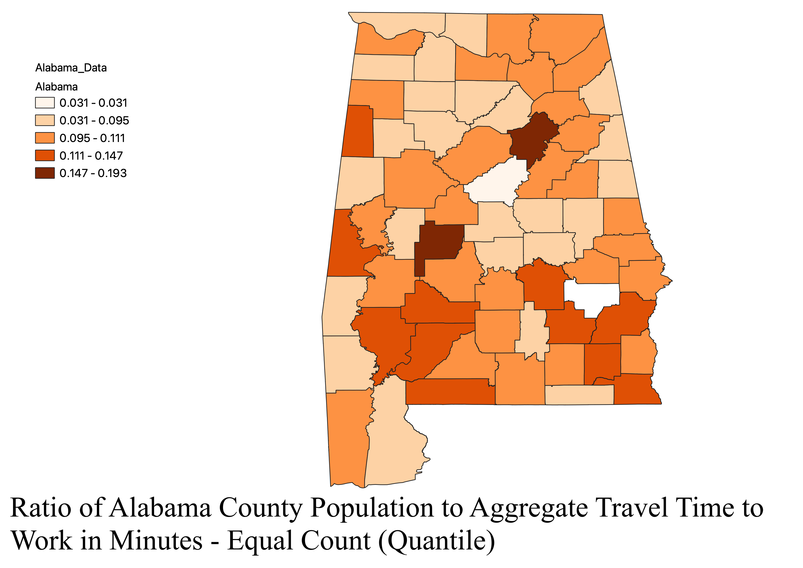
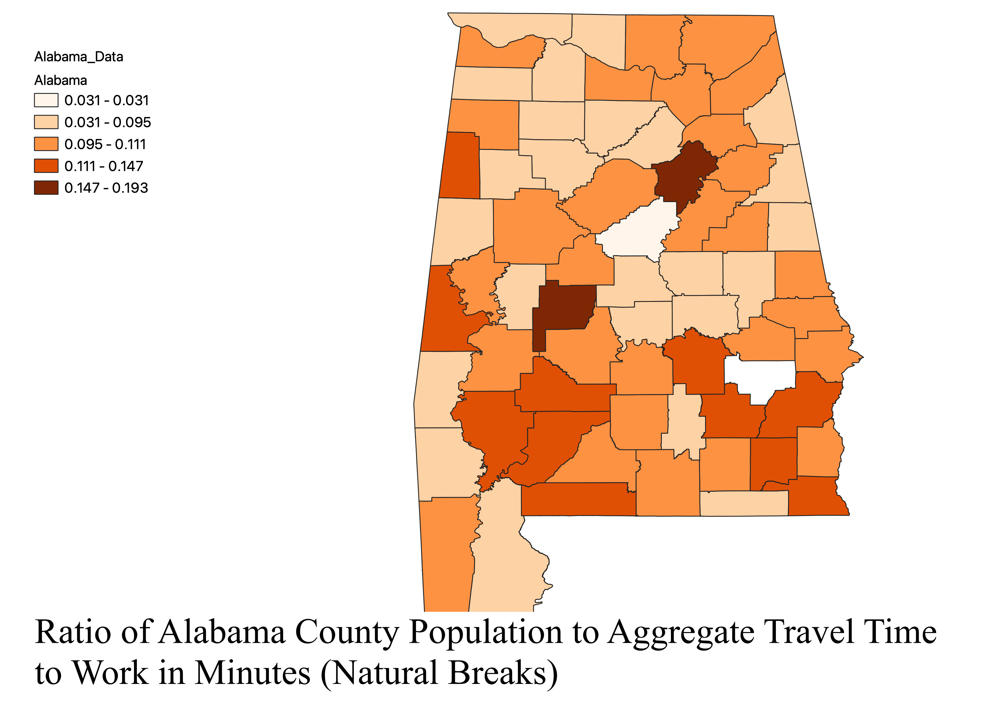
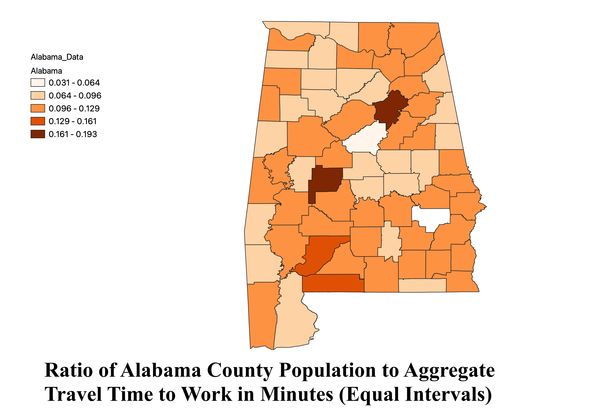

Homework 6 pt 2: Census data ratios and categories
David Gray
This is a choropleth map of Alabama that demonstrates aggregate travel time to work in minutes for each county.
A ratio was created that utilized Alabama County population and aggregate travel time to work in minutes. This ratio
was very beneficial to make because the last homework map was distorted by population. This ratio does not allow the population
to dictate how the map looks and you can see what is really going on. In my last map, all of the counties with the
highest populations had the highest aggregate travel time to work. Now, you can see that it is not those counties and
appears to be several other smaller counties. The three different map modes all tell a slightly different story. Firstly, the pros of an equal
quantiles map is that it divides the data into equal sizes which makes it easy to compare values in different areas of the state. A com is that
sometimes the grouping can lead to different values that are not the best for comparison. Natural break mode can highlight
a natural grouping in the data revolving around geogrpahic region. A con is that it could fail at representing data with outliers.
For the equal interval map, a pro is that it is simple and easily divides the data into equal intervals. A con is that
it can be difficult to represent a dataset with a really large range of values.



Data used for this project
CSV dataset
Link to shapefile